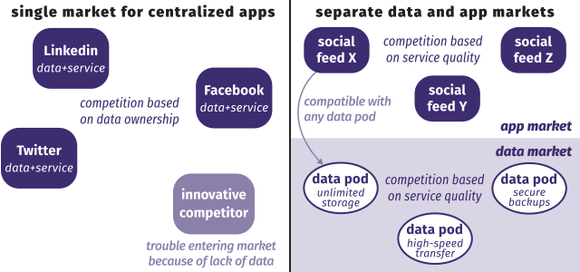

Many Linked Data life cycles are proposed.
This simple cycle consists of 5 steps.
Generation is the step in which
we convert non-RDF data to RDF.
Most representations on the Web
are generated by templates.
-
Data resides in a back-end database.
-
The front-end Web application translates
database entries via templates into representations.
-
The data model from the database
easily maps to the target representation.
Templating is not always sufficient
to create 5-star Linked Data.
-
You can upgrade a JSON document to JSON-LD
by providing a relevant JSON-LD context.
-
A context identifies properties and structural elements,
but does not create links between resources.
-
Remodelling data to RDF on the fly is tricky.
-
Linked Data transcends your application.
- Link to external concepts.
- Reuse external identifiers.
Linked Data can be generated in batch
through a mapping process.
-
A mapping processor takes input sources
and a mapping file as input.
-
The mapping file explains how input data
should be converted to the RDF model.
- selectors to locate data
- rules to transform data
-
Different processors have different features.
- source type support
- interlinking together with mapping
- …
Mapping can be performed with
ad-hoc scripts for a specific dataset.
-
You write custom code to handle your case.
-
The short-term costs might be low,
but long-term maintenance can prove difficult.
- Changes require a developer.
- The mapping is not reusable across datasets.
-
Different but related data sources result in
duplicated effort and incompatibilities.
R2RML is an RDF vocabulary to describe
a mapping of relational data into RDF.
RML is a generalization of R2RML
toward heterogeneous data sources.
-
RML abstracts different types of logical sources.
- A source is modelled as an iterator of items.
-
Sources can be
- databases
- CSV
- XML
- JSON
- …
- The mechanism is extensible through new vocabularies.
-
RML term maps use logical sources to create terms.
-
RML can map and interlink heterogeneous sources.
The mapping can be extended
to include other resources and properties.
-
RML mappings can incorporate data
from other sources, even in different formats.
-
Parts of mapping definitions can be reused.
-
RML mappings can look up data from Web APIs.
-
Interlinking can happen at mapping time,
rather than as a separate step after mapping.
- Reuse identifiers as much as possible.
- Link data as early as possible.
After Linked Data has been generated,
we can validate it using semantics.
Validation can be applied
on different data levels.
-
validation on the individual field level
- spelling mistakes
- field overloading
- simple datatypes
- …
-
validation on the structural level
- integrity
- required and prohibited structures
- …
-
validation on the semantic level
- domain and range of values
- inconsistencies
- …
Databases only allow for
rudimentary constraint validation.
-
They perform elementary value-type checks.
- field
Temperature has type INTEGER
-
They can ensure referential integrity.
- Does a referenced record exist?
Schemas can validate conformance to
a reusable set of structural constraints.
-
The Shapes Constraint Language (SHACL)
allows for
the specification of validation rules in RDF.
-
Use nested shapes to describe the desired structure.
-
Shape Expressions (ShEx)
serve similar goals,
but have a higher expressivity.
-
Both languages soften the open-world assumption
by providing expectations for a specific context.
-
This is useful for apps with specific assumptions.
Ontologies allow for more specific
content-based validation.
-
More specific types can be defined,
and their definitions can be reused.
- temperature
- days per month
- …
-
Type checking can take more factors into account.
- domain and range
- incompatible types
- …
-
Additional reasoning
can further identify problems.
In the following example, type checking
identifies an incorrect triple.
The ontology defines the following constraints:
foaf:knows rdfs:domain foaf:Person;
rdfs:range foaf:Person.
:Mathematics a :Course.
:Course owl:disjointWith foaf:Person.
This triple violates those constraints:
:Albert foaf:knows :Mathematics.
Violations across triples can be identified,
but not always automatically resolved.
The ontology defines the following constraints:
:isBiologicalFatherOf a owl:IrreflexiveProperty;
owl:InverseFunctionalProperty.
The triples below are inconsistent:
:Albert :isBiologicalFatherOf :Albert.
:Albert :isBiologicalFatherOf :Delphine.
:Jacques :isBiologicalFatherOf :Delphine.
Which ones are correct is not known.
Automated validation tells you
whether data makes sense.
-
RDFUnit assesses the quality of a dataset
by running automated tests on it.
-
Ontologies used in a dataset can be looked up
by dereferencing its concepts.
-
The constraints in the ontology are transformed
into SPARQL queries and then evaluated.
- This results in warnings and/or errors.
By validating during the mapping process,
we detect quality issues before they occur.
-
Batch mapping processes
can generate millions of triples.
-
If we find a quality issue only afterwards,
we have to restart the entire mapping.
-
Checking quality during mapping allows
pinpointing the cause of errors and fixing them.
- Mapping rules that fail need not be not executed first.
As soon as Linked Data is ready,
it can be published for consumption.
There are roughly 3 ways of
publishing Linked Data on the Web.
A data dump places all dataset triples
in one or more archive files.
-
Dumps need to be downloaded entirely
before they can be queried.
- Dump files can be several gigabytes.
-
They offer the client full flexibility
to choose how data is processed.
-
Keeping data up-to date requires effort.
- redownload the entire dump
- download and apply incremental patches
A data dump places all dataset triples
in one or more archive files.
A SPARQL endpoint lets clients evaluate
arbitrary (read-only) queries on a server.
-
This gives clients direct access to
(only) the data they are interested in.
- Only very little bandwidth is required.
-
Data is always up-to-date.
-
The per-request cost for SPARQL endpoints
is much higher than for other HTTP servers.
- Few servers allow arbitrarily complicated queries.
A SPARQL endpoint lets clients evaluate
arbitrary (read-only) queries on a server.
Linked Data documents provide
per-topic access to a dataset.
-
They follow the Linked Data principles.
- The information structure resembles typical webpages.
-
Browsing up-to-date datasets is straightforward.
-
Query evaluation is possible through
link-traversal-based querying.
-
The evaluation of SPARQL queries is rather slow.
-
Completeness cannot always be guaranteed.
Linked Data documents provide
per-topic access to a dataset.
Once Linked Data is published on the Web,
clients can evaluate queries over it.
Just like on the “human” Web,
querying goes beyond browsing.
- Where can we find the data we need?
- How can we access that data?
- How do we combine it with other data?
The possibilities for query evaluation
depend on how data is made available.
-
Is the data available in RDF?
- Then we should discover the ontologies used.
-
Is the data linked to other data?
- Then we can / might need to involve other datasets.
-
In what interfaces is the data available?
- The client might need to evaluate (a part of) the query.
Evaluating queries over a federation
of interfaces introduces new challenges.
-
Which interface has the necessary data?
- If there are multiple, which one is the best?
-
How will the query evaluation be coordinated?
- Does one SPARQL endpoint talk to others?
- Does the client talk to all SPARQL endpoints?
-
In what order are subqueries executed?
- We should minimize high numbers of intermediary results.
Enhancements let client feedback
find its way back to the source.
Data doesn’t stop when published.
It only just begins.
-
When users query data sources,
they might spot mistakes or missing data.
-
Can users correct data?
Can they create new data?
-
Especially open data should be open to corrections.
- Feedback is a core added value of open.
Unfortunately, such feedback loops
are still rare for Linked Data.
Open challenges include:
- How can end users edit triples?
- How can edits be reviewed?
- How do we keep track of history?
Provenance allows modeling
the history trail of facts.
-
Provenance captures entities, activities, and people
involved in producing a resource.
-
Provenance can assess quality, reliability, or trust.
-
Tim Berners-Lee sketched an Oh yeah? button
you click to gain trust in information on the Web.
-
Many provenance challenges are still open.
- How to generate provenance (during mapping)?
- How to store n provenance triples per data triple?
Reverse mappings could feed edits
back to the original source.
-
If the RDF triples are generated from raw data,
edits to the triples should be ported back.
- If not, they are overwritten by the next mapping.
-
If the mapping file declaratively specifies
how a source maps to triples,
we might be able to reverse it automatically.
The original Semantic Web vision
features intelligent agents.
Schedule bi-weekly appointments
with a licensed physical therapist,
specialized in a particular field,
living nearby home or my workplace.
adapted from The Semantic Web
Do we still need the Semantic Web
with a smartphone in our pockets?
-
On the surface, the current generation of smart devices delivers
much of what the Semantic Web promised.
- Just realize the intelligence
is not on your smartphone.
The current generation of agents
only performs preprogrammed acts.
-
The Semantic Web’s goal is to allow this
with unknown services and data.
-
The service inclusion process for current digital agents
is non-transparent and non-democratic, unlike the Web.
-
Even if it were democratic, it wouldn’t scale,
since the integration is hardcoded.
-
Machines should discover services and data
and use them without any prior knowledge.
Before Linked Data, the Semantic Web
suffered from a chicken-and-egg problem.
-
Applications and data were waiting for each other.
- Have you used the Semantic Web yet?
-
Now, at least the data is there on a large scale.
-
What more do we need to kickstart things?
The Web strives to be universal
through
independence
of many factors.
Your freedom on the Web
shouldn’t be influenced by:
-
technological concerns
- hardware
- software
- network access
- …
-
personal concerns
- language
- culture
- disability
- …
The Web brings freedom of expression
to everyone across the world.
-
Anyone can say anything about anything.
-
We all have our own spaces,
so we don’t have to agree.
-
We can link to opinions of others
to discuss about them.
The Web brings permissionless innovation
at an unprecedented scale.
-
Anyone can build anything for any reason.
-
You don’t need anyone’s permission
to join the Web and launch a new idea.
-
This contrasts with app stores,
where your app has to be approved
and you have to share your revenues.
The Web has changed tremendously
in a short timespan.
 © Tim McDonagh
© Tim McDonagh
Many social media platforms
reduce the Web to television.
-
Rather than deliberately choosing content,
we let The Stream
decide in our place.
-
We do not actively control
what parts of other’s data we see.
-
Our comments and reactions
also get engulfed by The Stream.
-
Hyperlinks lose their value as a currency
and voting mechanism.
Our data has become centralized
in a handful of Web platforms.
-
Data that would be on people’s personal blogs
is now on Facebook and Twitter.
-
Their user experience lowered the barrier,
but we are no longer in control of our data.
-
This has far-reaching consequences for privacy.
-
It endangers the Web’s universality.
Sign in with Facebook to see this content.
-
Facebook works better with the native app.
-
Within the walled gardens of social media,
you have to move either data or people.
 © David Simonds
© David Simonds
Ironically, permissionless innovation
even allows platforms that prevent it.
The Facebook founder has no intention of
allowing anyone to build anything on his platform
that does not have his express approval.
Having profited mightily from the Web’s openness,
he has kicked away the ladder that elevated him
to his current eminence.
John Naughton, The Guardian
![[photo of a ladder]](images/ladder.jpg) © Vinayak Shankar Rao
© Vinayak Shankar Rao
Decentralization
in Solid is not needing
centralized platforms to enjoy the Web.
-
Decentralization is broader than blockchain.
-
Decentralization
in blockchain means that
no central party is needed to reach a decision.
-
Blockchains replicate data across many nodes.
-
Solid decentralizes to avoid a dependency on
a central party’s data ownership or permission.
- Store your data where you want.
- Still use the apps that you want.
- Switch at any time.
Different platforms tackle decentralization
at very different scales.
You can choose where you store
every single piece of data you produce.

You can grant apps and people access
to very specific parts of your data.

Separating app and storage competition
drives permissionless innovation.

Solid is not a company or organisation.
Solid is not (just) software.
-
Solid is an ecosystem.
-
Standards explain how different instances interoperate.
-
Solid is a movement.
-
We’re shifting the mindset on how to build apps.
-
Solid is a community.
-
Different people, companies, and organisations build it.
![[the Solid logo]](images/solid-logo.svg)
Anyone can build or host
software for Solid.
-
You can have a server at home
or at your workplace.
- Open-source implementations are available.
-
You can rent server space
or even dedicated Solid space.
-
You can use one of the
free community servers.
The Solid server acts as a data pod
that stores and guards your data.
-
Your Solid data pod is a regular Web server.
- with support for access control
- with support for Linked Data
-
Your Solid data pod is application-agnostic.
- You can build any application.
- All application-specific logic resides in clients.
-
Your Solid data pod is like your website.
- Yet your data can be opened with all apps you want.
A typical data pod can contain
any data you create or need online.
- profile üë§
- photos üñº
- comments üó£
- likes üëç
- … ✨
Solid clients are browser or native apps
that read from or write to your data pod.
-
You give apps permission to parts of your pod.
- You can choose very precisely what they can access.
-
Friends give you permission to parts of their pod.
- They can choose very precisely what you can access.
-
Apps build a unified experience with all that data.
- Browse your friends’ pictures along with yours.
Any app you can envision,
you can build with Solid.
- calendar üìÖ
- social feed üë•
- photo sharing üì∏
- academic peer review system üéì
- … ✨
Decentralized apps have many back-ends.
Back-ends work with many apps.

Linked Data in the RDF model
solves crucial challenges for Solid.
-
If we all store our own data,
how do we connect it to others’ data?
-
How can apps share data,
without too many prior agreements?
-
How do we integrate data
from multiple data pods?
Through URLs and RDF, every piece of data
can link to any other piece of data.
PREFIX as: <https://www.w3.org/ns/activitystreams#>
PREFIX xsd: <http://www.w3.org/2001/XMLSchema#>
<#ruben-likes-ugain> a as:Like;
as:actor <https://ruben.verborgh.org/profile/#me>;
as:object <https://www.ugain.ugent.be/#bigdata2020>;
as:published "2020-03-19T20:00:00Z"^^xsd:dateTime.
Shapes (and hopefully soon semantics)
enable layered compatibility.
PREFIX as: <https://www.w3.org/ns/activitystreams#>
PREFIX xsd: <http://www.w3.org/2001/XMLSchema#>
<#ruben-likes-ugain> a as:Like;
as:actor <https://ruben.verborgh.org/profile/#me>;
as:object <https://www.ugain.ugent.be/#bigdata2020>;
as:published "2020-03-19T20:00:00Z"^^xsd:dateTime.
Different source data can be concatenated
(but let’s track provenance).
PREFIX as: <https://www.w3.org/ns/activitystreams#>
PREFIX xsd: <http://www.w3.org/2001/XMLSchema#>
<#ruben-likes-ugain> a as:Like;
as:actor <https://ruben.verborgh.org/profile/#me>;
as:object <https://www.ugain.ugent.be/#bigdata2020>;
as:published "2020-03-19T20:00:00Z"^^xsd:dateTime.
<#peter-likes-ugain> a as:Like;
as:actor <http://www.peterlambert.be/#me>;
as:object <https://www.ugain.ugent.be/#bigdata2020>;
as:published "2020-03-19T20:05:00Z"^^xsd:dateTime.
The traditional way of building apps
does not work well with decentralization.

Building apps over decentralized data
requires different app techniques.


 Except where otherwise noted, the content of these slides is licensed under a Creative Commons Attribution 4.0 International License.
Except where otherwise noted, the content of these slides is licensed under a Creative Commons Attribution 4.0 International License.